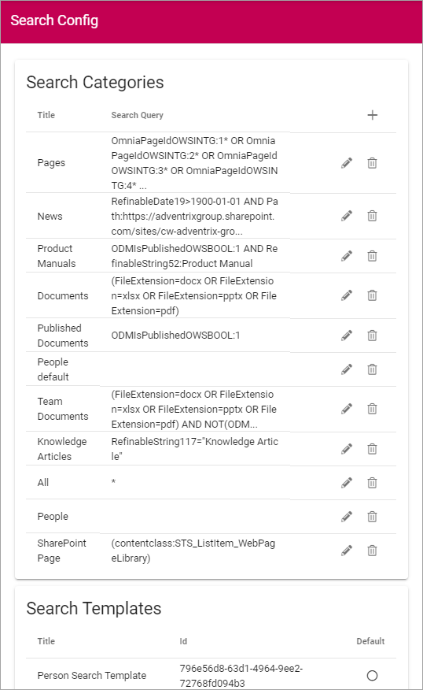
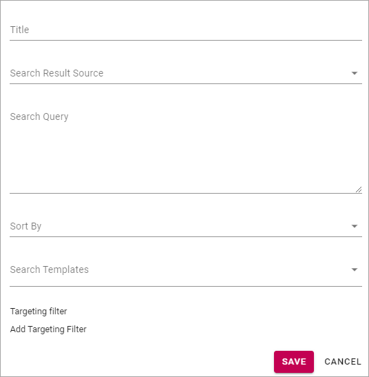
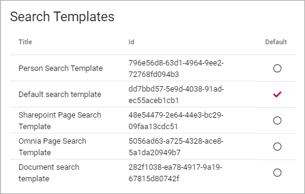
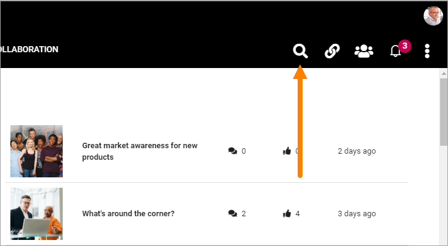
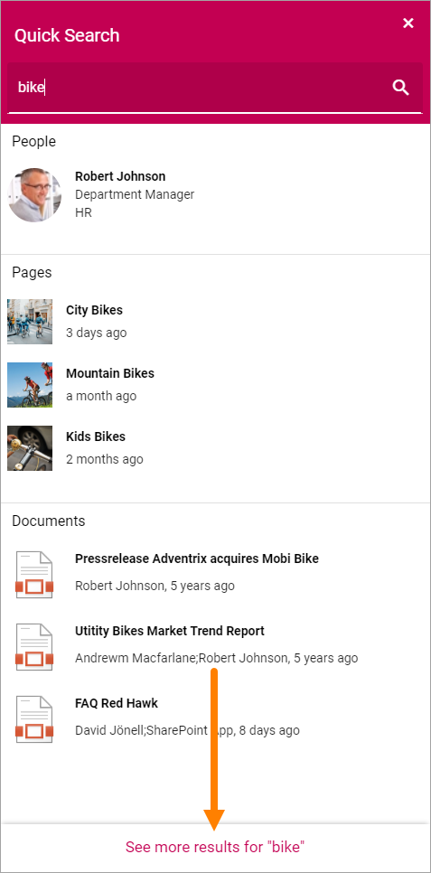
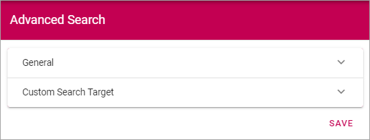
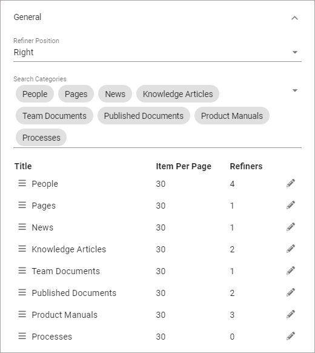
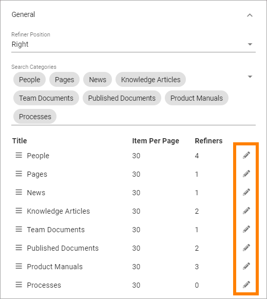
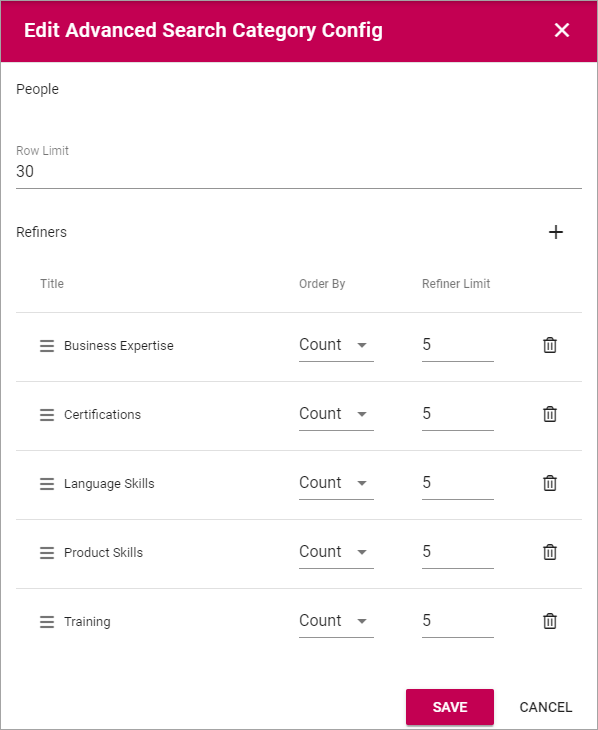
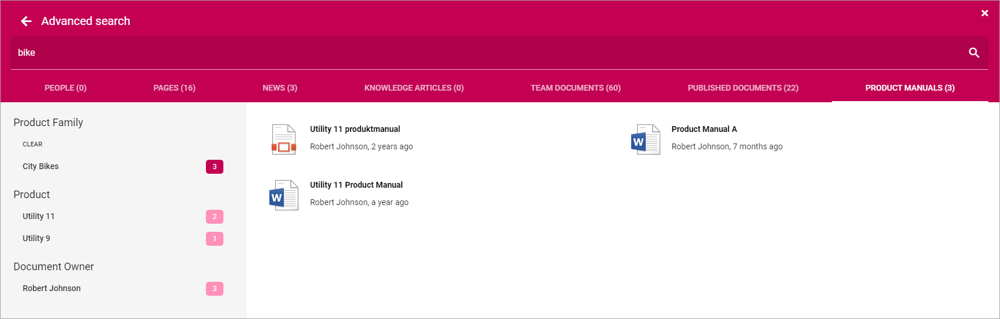

Search¶
Use these options for settings for general Search configuration, Quick Search and Advanced Search.

Search config¶
Using the “Search config” tab you can work with Search Categories and set default Search Template.
To edit a Search config, click the pen. To delete a Search config, click the dust bin.
Search Categories¶
To create a new Search Category, click the plus and use the following settings:
- Title: Add a title for the Search Category.
- Search Result Source: Select Source from the list.
- Search Query: Add the Search Query here (see below for an example).
- Sort By: Choose property to sort by, or you can choose to sort by Relevance or Popularity (at the bottom of the list).
- Sort Direction: When you have chosen a property to sort by, you can select a sort direction here.
- Search Templates: Select one or more Search Templates from the list.
- Targeting filter: A search category can be targeted to a specific group of people based on the targeting system in Omnia. This setting will be used both in Quick and Advanced search.
The same settings are available when editing a Search Category.
Search Templates¶
Search Templates are created by developers and are simply listed here. A Search Template defines how to display a search result. If a search result happens to not match any Search Template, the Default search template is used. You can set Default search template by clicking any of the templates in the list.
In this example the selected Default search template is actually named that, but any other template can be selected.
Quick Search¶
Quick Search is available in the Heading (can be turned off in settings) or through the Search block:
For Quick Search, the following settings are available:

- Search Categories: One or more Search Categories can be added (if more than one is available).
- Row Limit: You can set Row Limit for each Search Category. Row Limit is the number of objects per Search Results “page”.
For more information about the Search block, see: The Search block
Advanced Search¶
When a search has been made in Quick Search, Advanced Search is available through a link at the bottom. Advanced search can also be made available using the Search block.
Something like this is shown:

To the left refiners are shown, if any are set up.
For more information on how to make Advanced search available through the Search block, see: The Search block
Use these settings for Advanced Search:
General¶
On this tab the following settings are available:
- Refiner Positions: Select where the Refiners will be placed - Left or Right.
- Search Categories: Add one or more Search Categories to use in Advanced Search.
Additional settings can be reached by clicking the pen for a Search Category:
Then these settings are available:
- Row Limit: Select number of search result rows for each “page”.
- Refiners: Use this option to add refiners for the Search Category (click the plus to add).
- Order By: Set the sorting in the refiner’s lists; “Count” (=number of hits) or “Alphabetic”.
- Refiner Limit: Set the number of refiner selections to be shown before a “Show more” link is displayed. Default=5.
To delete a Refiner, just click the dust bin.
To create a new refiner, do the following:
- click the plus.
- Select property for the refiner.

- Set “order By” and “Refiner Limit” and save.
Here’s an example of refiners for Product Manuals, with 22 hits:

The user can now use the refiners to the left to for example just display documents for the Product Family City Bikes, which is just three documents:
Custom Search Target¶
If you activate this option you can change what will happen when a user clicks the Advanced Search link, for example after having made a Quick Search. This is useful for example if a specific Search Center should be used.